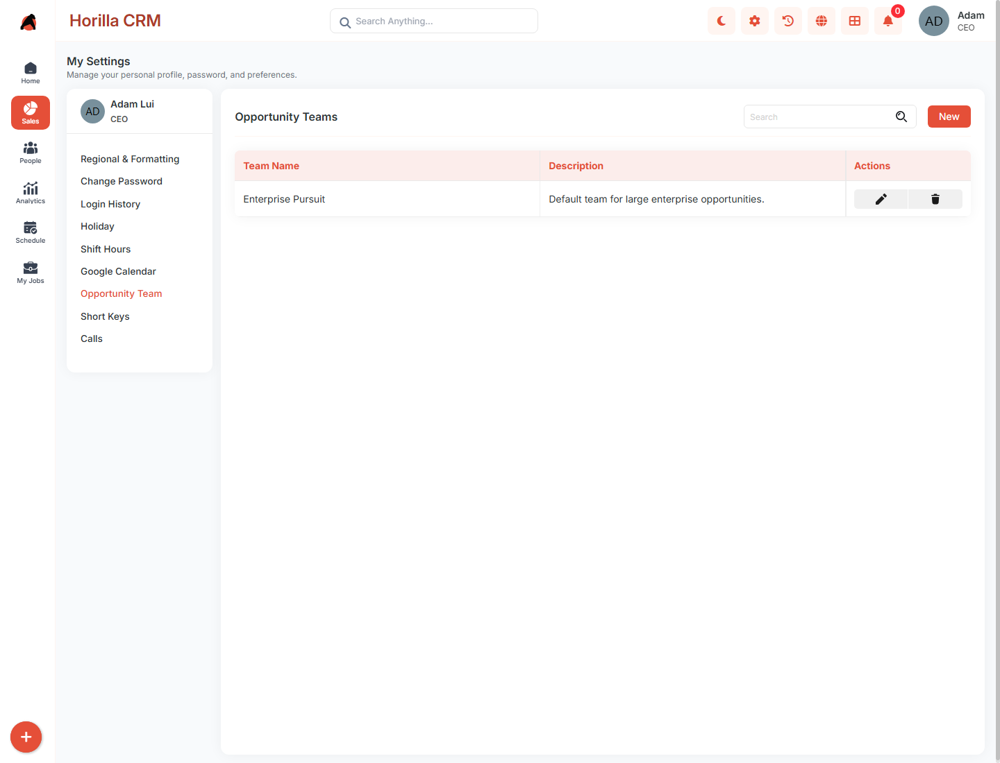
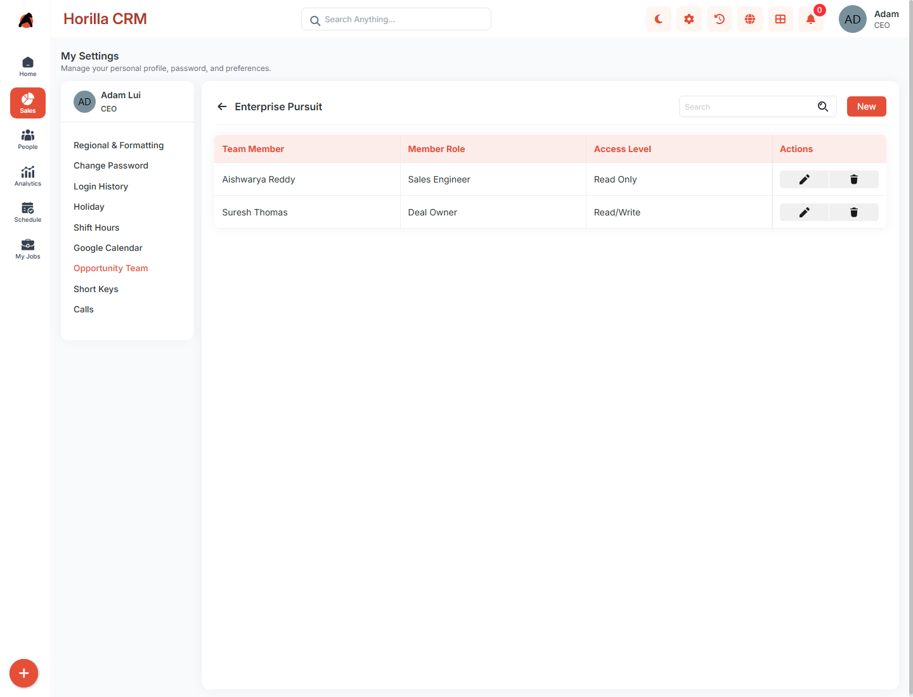

Introduction
- Opportunity Teams and Opportunity Splits let users collaborate on individual opportunities and attribute revenue or quantity credit across team members.
- Team Selling must be enabled before either feature is accessible.
- Once enabled, users can assign team members with defined roles and access levels, and can split credit across members using configurable split types.
1. Enable Team Selling
Path: Settings → Opportunity → Opportunity Team
Settings. The page title is Team Selling Setup. Enable
Team Selling is on, and the status reads Team Selling enabled — opportunity
teams are available across your system.
Opportunity Split Settings is
in the menu. Turning the switch off deletes existing opportunity teams and their members.
Access Control asks Choose who can use team selling.
All
Users is Active. Specific Roles and Specific Users show Click To Select.

- Team Selling is disabled by default. Click Enable Team Selling on the path above to activate it.
- Once enabled, the Opportunity Teams list under My Settings and all split features become available.
- Disabling Team Selling hides all team and split features system-wide.
2. Opportunity Teams (My Settings)
Path: My Settings → Opportunity Team.
2.1 Teams List
- Lists the teams owned by the signed-in user, with columns for Team Name and Description.
- Each team has Edit and Delete actions.
- Clicking a team name opens its detail view.

2.2 Create a Team
- Click New to open the team form.
- Enter a Team Name and Description.
- Use Add Members to select users. For each member, assign a team role and an opportunity access level (Read/Write or Read-Only).
- Click + Add More to add several members at once.
- Click Save.
2.3 Team Detail View
- Shows the team name and its members, with columns for Team Member, Member Role and Access Level.
- Per-member actions: Edit and Remove.
- Click New to add members to an existing team.

3. Opportunity Teams (Opportunity Detail View)
With Team Selling enabled, a Team Members related list appears on each opportunity's detail view.
3.1 Add Members Manually
- Click New in the Team Members related list.
- Select one or more users and assign each a Team Role and an Opportunity Access level.
- Click Save.
3.2 Add Default Team
- Click Add Default Team and select an existing Opportunity Team from the dropdown.
- All of its members are added at once with their preset roles and access levels.
- Members already on the opportunity are skipped automatically.
3.3 Manage Members
- Click Edit to change a member's role or access level.
- Click Remove to take a member off the opportunity.
4. Opportunity Split Settings
Path: Settings → Opportunity → Opportunity Split
Settings. The page description is Configure how revenue is split between team
members on an opportunity.
4.1 Enable Opportunity Splits
Enable Opportunity Split is on. The status reads Opportunity Splits enabled
— users can now split opportunities.

Disabling this option permanently deletes all existing split data.
4.2 Split Types
- The list shows all split types with the columns Split Label, Split Field, Totals 100% and Is Active.
- Each type can be toggled active or inactive.
Four split types are created automatically:
| Split type | Field split | Must total 100% |
|---|---|---|
| Revenue | Opportunity - Amount | Yes |
| Overlay | Opportunity - Amount | No |
| Expected Revenue | Opportunity - Expected Revenue | Yes |
| Expected Revenue Overlay | Opportunity - Expected Revenue | No |
Let users add members to opportunity teams while editing splits is off. While it is off, only opportunity team members can receive a split. Turning it on lets any active company user be assigned a split.
5. Opportunity Splits (Opportunity Detail View)
When splits are enabled, a Splits section appears on the opportunity detail view, with one tab per active split type.
5.1 Split Tabs
- Each active split type, for example Revenue, Overlay or Expected Revenue, has its own tab.
- Each tab is managed independently of the others.
5.2 Manage Opportunity Splits
- Each tab shows a table with User, Split Percentage and Split Amount columns.
- Click + Add Row, select a user, then enter either a Split Percentage (the amount is calculated automatically) or a Split Amount (the percentage is recalculated automatically).
Totals and Validation
- The table footer shows the Total Percentage and Total Amount.
- Split types that require 100% are validated before saving.
- Overlay types accept any total.
Save and Recalculate
- Click Save to store the rows for the active split type.
- If the opportunity's amount or expected revenue changes, click Recalculate to update split amounts proportionally from the saved percentages.
- Remove an individual row with the delete icon.